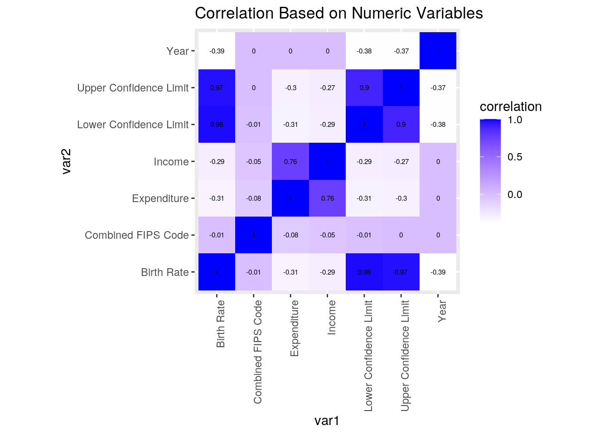
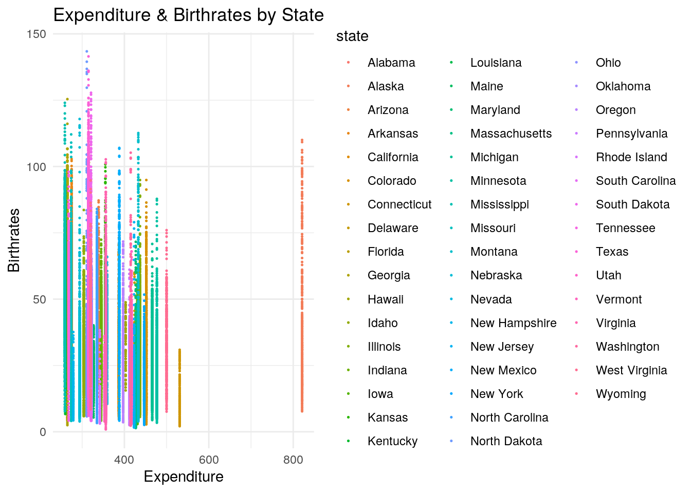
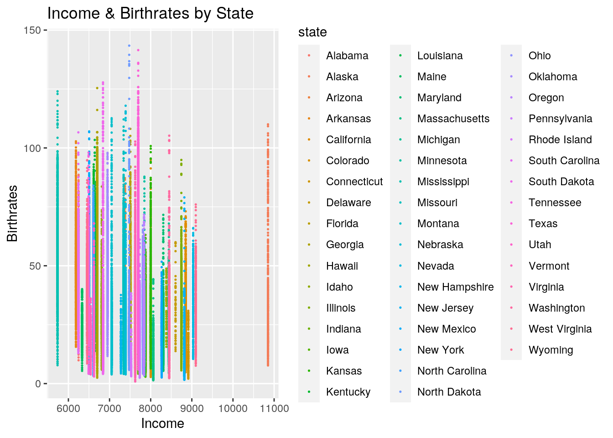
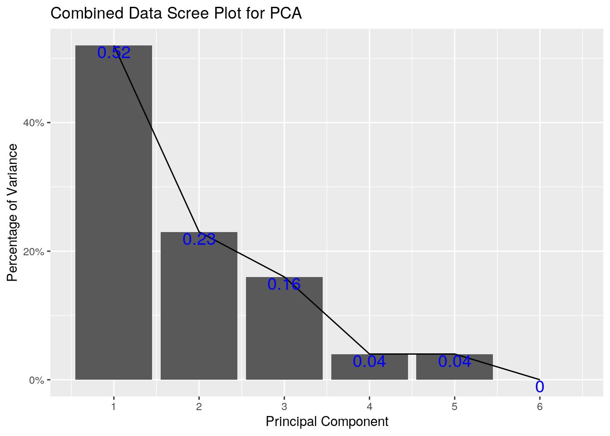
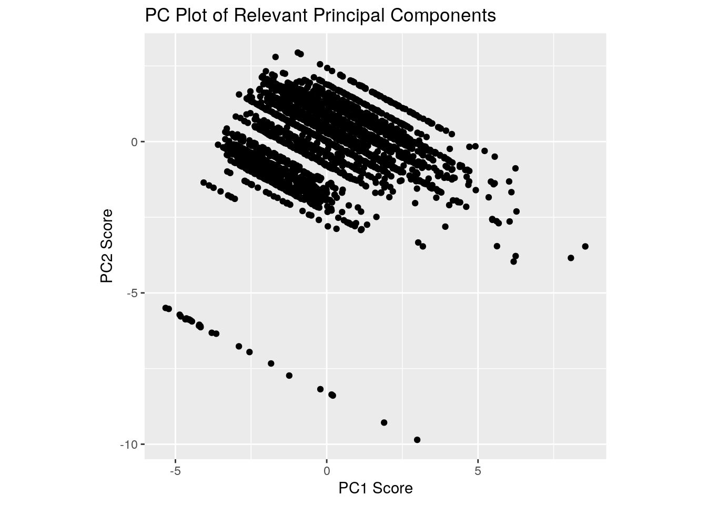
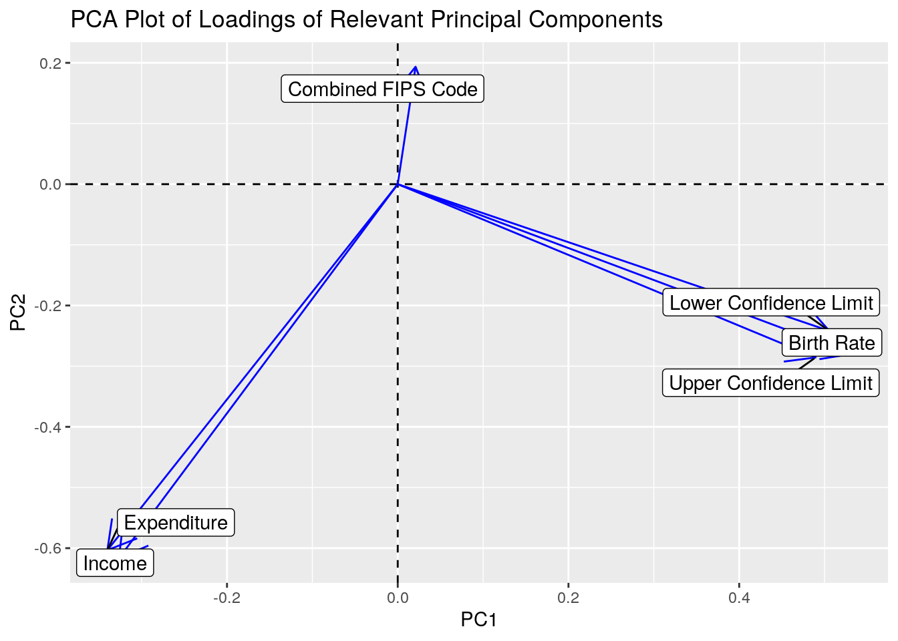

A knitted R Markdown document (ideally HTML) and the raw R Markdown file (as .Rmd) should both be submitted to Canvas by 11:59pm on the due date. These two documents will be graded jointly, so they must be consistent (i.e., don’t change the R Markdown file without also updating the knitted document).
The text of the document should provide a narrative structure around your code/output. All results presented must have corresponding code. Any answers/results/plots etc. given without the corresponding R code that generated the result will not be considered. Furthermore, all code contained in your final project document must work correctly (knit early, knit often)! Please do not include any extraneous code or code which produces error messages. (Code that produces warnings is acceptable, as long as you understand what the warnings mean!)
##Find data:
Find two (!) datasets with one variable in common (e.g., dates, times, states, counties, countries, sports players), both with at least 50 observations (i.e., rows) in each. Please think very carefully about whether it makes sense to combine your datasets! If you find one dataset with 50 patients and it has their age, and you find another dataset with 50 different patients that has their ages, it makes no sense to join them based on age (you would just be pairing up random people of the same age).
When combined, the resulting/final dataset must have at least 4 different variables (at least 3 numeric) in addition to the common variable (i.e., five variables total).
You can have as many variables as you would like! If you found two datasets that you like but they don’t have enough variables, find a third dataset with the same common variable and join all three.
##Guidelines
If the datasets are not tidy, you will need to reshape them so that every observation has its own row and every variable its own column. If the datasets are both already tidy, you will make them untidy with pivot_wider()/spread() and then tidy them again with pivot_longer/gather() to demonstrate your use of the functions. It’s fine to wait until you have your descriptives to use these functions (e.g., you might want to pivot_wider() to rearrange the data to make your descriptive statistics easier to look at); it’s fine long as you use them at least once!
Depending on your datasets, it might be a good idea to do this before joining. For example, if you have a dataset you like with multiple measurements per year, but you want to join by year, you could average over your numeric variables to get means/year, do counts for your categoricals to get a counts/year, etc.
If your data sets are already tidy, demonstrate the use of pivot_longer()/gather() and pivot_wider()/spread() on all or part of your data at some point in this document (e.g., after you have generated summary statistics in part 3, make a table of them wide instead of long).
Join your 2+ separate data sources into a single dataset based on a common ID variable! If you can’t find a good pair datasets to join, you may split one main dataset into two different datasets with a common ID variable in each, and then join them back together based on that common ID, but this is obviously less than ideal.
Create summary statistics
Use all six core dplyr functions (filter, select, arrange, group_by, mutate, summarize) to manipulate and explore your dataset. For mutate, create a new variable that is a function of at least one other variable, preferably using a dplyr vector function (see dplyr cheatsheet). It’s totally fine to use the _if, _at, _all versions of mutate/summarize instead (indeed, it is encouraged if you have lots of variables)
Create summary statistics (mean, sd, var, n, quantile, min, max, n_distinct, cor, etc) for each of your numeric variables both overall and after grouping by one of your categorical variables (either together or one-at-a-time; if you have two categorical variables, try to include at least one statistic based on a grouping of two categorical variables simultaneously). If you do not have any categorical variables, create one using mutate (e.g., with case_when or ifelse) to satisfy the group_by requirements above. Ideally, you will find a way to show these summary statistics in an easy-to-read table (e.g., by reshaping). (You might explore the kable package for making pretty tables!) If you have lots of numeric variables (e.g., 10+), or your categorical variables have too many categories, just pick a few (either numeric variables or categories of a categorical variable) and summarize based on those. It would be a good idea to show a correlation matrix for your numeric variables (you will need it to make one of your plots).
Make visualizations (three plots)
stat="summary"Perform k-means/PAM clustering or PCA on (at least) your numeric variables.
Include all steps as we discuss in class, including a visualization.
If you don’t have at least 3 numeric variables, or you want to cluster based on categorical variables too, convert them to factors in R, generate Gower’s dissimilarity matrix on the data, and do PAM clustering on the dissimilarities.
Show how you chose the final number of clusters/principal components
Interpret the final clusters/principal components
For every step, document what your code does (in words) and what you see in the data!
Prerequisite: Finding appropriate data from at least two sources per the instructions above: Failure to do this will result in a 0! You will submit a .Rmd file and a knitted document (html/pdf).
###These are the links to both of my datasets. ###https://www.kaggle.com/thaddeussegura/us-teen-birth-rates-ages-1519-20032018 ###https://vincentarelbundock.github.io/Rdatasets/datasets.html (PublicSchools)
library(tidyverse)
print(getwd())## [1] "/stor/home/dtn722/website/content"Teen_BIRTHRATES <- read_csv("Teen_Birth_Rates.csv")
PublicSchools <- read_csv("PublicSchools.csv")###0. Introduction (4 pts)
“PublicSchools” is one of the datasets I have chosen that showcases the amount of expenses and income it receives on average from various school districts by state. “Teen_Birth_Rates” is other dataset I have chosen. I simplified the name for convience as shown above. In “Teen_Birth_Rates”, it contains birth rate of teenagers per every 1,000 individuals from 2003-2018. In addition to this, the dataset provides birthrate per county in each US State, and the age group spanning from 15 to 19 years old.
These datasets are interesting to me, because in my other course of Sociology Health & Illness, we often discuss the relationship between funding and how it affects health across US populations. Teenage pregnancy is not the only health dimensions we analyze in the class. I wanted to see how related the two are based on the datasets I have found.
tidyr functions pivot_longer/gather and/or pivot_wider/spread)I used the pivot_wider function to create new columns of each county and assigned them the value of their birth rates per each year in the dataset (2003-2018). I peformed the function below in my joining/merging section, because I needed my dataset with no N/A’s for it to function properly.
###2. Joining/Merging (8 pts)
dplyr join functioncolnames(PublicSchools)## [1] "X1" "Expenditure" "Income"PublicSchool <- PublicSchools
colnames(PublicSchool)[colnames(PublicSchool) == "X1"] <- "State"
colnames(PublicSchool)## [1] "State" "Expenditure" "Income"Combined <- full_join(Teen_BIRTHRATES, PublicSchool, by = "State")
CombinedNONA <- Combined %>% na.omit()
library(tidyverse)
CombinedNONA %>% pivot_wider(names_from = County, values_from = "Birth Rate")## # A tibble: 49,024 x 1,815
## Year State `State FIPS Cod… `County FIPS Co… `Combined FIPS …
## <dbl> <chr> <chr> <chr> <dbl>
## 1 2003 Alab… 01 001 1001
## 2 2004 Alab… 01 001 1001
## 3 2005 Alab… 01 001 1001
## 4 2006 Alab… 01 001 1001
## 5 2007 Alab… 01 001 1001
## 6 2008 Alab… 01 001 1001
## 7 2009 Alab… 01 001 1001
## 8 2010 Alab… 01 001 1001
## 9 2011 Alab… 01 001 1001
## 10 2012 Alab… 01 001 1001
## # … with 49,014 more rows, and 1,810 more variables: `Lower Confidence
## # Limit` <dbl>, `Upper Confidence Limit` <dbl>, Expenditure <dbl>,
## # Income <dbl>, Autauga <dbl>, Baldwin <dbl>, Barbour <dbl>, Bibb <dbl>,
## # Blount <dbl>, Bullock <dbl>, Butler <dbl>, Calhoun <dbl>, Chambers <dbl>,
## # Cherokee <dbl>, Chilton <dbl>, Choctaw <dbl>, Clarke <dbl>, Clay <dbl>,
## # Cleburne <dbl>, Coffee <dbl>, Colbert <dbl>, Conecuh <dbl>, Coosa <dbl>,
## # Covington <dbl>, Crenshaw <dbl>, Cullman <dbl>, Dale <dbl>, Dallas <dbl>,
## # `De Kalb` <dbl>, Elmore <dbl>, Escambia <dbl>, Etowah <dbl>, Fayette <dbl>,
## # Franklin <dbl>, Geneva <dbl>, Greene <dbl>, Hale <dbl>, Henry <dbl>,
## # Houston <dbl>, Jackson <dbl>, Jefferson <dbl>, Lamar <dbl>,
## # Lauderdale <dbl>, Lawrence <dbl>, Lee <dbl>, Limestone <dbl>,
## # Lowndes <dbl>, Macon <dbl>, Madison <dbl>, Marengo <dbl>, Marion <dbl>,
## # Marshall <dbl>, Mobile <dbl>, Monroe <dbl>, Montgomery <dbl>, Morgan <dbl>,
## # Perry <dbl>, Pickens <dbl>, Pike <dbl>, Randolph <dbl>, Russell <dbl>, `St
## # Clair` <dbl>, Shelby <dbl>, Sumter <dbl>, Talladega <dbl>,
## # Tallapoosa <dbl>, Tuscaloosa <dbl>, Walker <dbl>, Washington <dbl>,
## # Wilcox <dbl>, Winston <dbl>, `Aleutians East` <dbl>, `Aleutians
## # West` <dbl>, Anchorage <dbl>, Bethel <dbl>, `Bristol Bay` <dbl>,
## # Denali <dbl>, Dillingham <dbl>, `Fairbanks North Star` <dbl>, Haines <dbl>,
## # Juneau <dbl>, `Kenai Peninsula` <dbl>, `Kodiak Island` <dbl>, `Lake and
## # Peninsula` <dbl>, `Matanuska-Susitna` <dbl>, Nome <dbl>, `North
## # Slope` <dbl>, `Northwest Arctic` <dbl>, `Prince of Wales-Outer
## # Ketchikan` <dbl>, Sitka <dbl>, `Skagway-Hoonah-Angoon` <dbl>, `Southeast
## # Fairbanks` <dbl>, `Valdez-Cordova` <dbl>, `Wade Hampton` <dbl>,
## # Yakutat <dbl>, `Yukon-Koyukuk` <dbl>, Apache <dbl>, Cochise <dbl>,
## # Coconino <dbl>, Gila <dbl>, …I chose full join, because I wanted to keep all the data from both datasets. If I had chosen leftjoin or righjoin I would have lost important data such as birth rate, expenditures, and expenses. PublicSchools would not have the birthrate data and would classify the whole column as “NA” which is not the case, while Teen_Birthrates would have the whole column of expenditures and expenses as “NA”, which is not true because public schools do spend and receive money. If these columns were dropped, this would be problematic when we perform summary statistics and are unable to do so to see the relationship between these variables. I chose to join both of the datasets by state, because based on the schools’ funding end expenses it may serve as a predictor of teen pregnancies. The schools’ funding by state can help determine a trend if schools require more funding to help educate teens better about sex education to prevent pregnancies. In addition, I chose to remove all “NA”s from the merged dataset to clean the data. By doing so, I lost 1,169 observations that did not fit in the merge.
dplyr functions in the service of generating summary tables/statistics (12 pts)
summarize alone and with group_by (if you have more than 10 variables, fine to just focus on 10) (20 pts)
library(dplyr)
CombinedNONA %>% arrange(desc(`Birth Rate`))## # A tibble: 49,024 x 11
## Year State County `State FIPS Cod… `County FIPS Co… `Combined FIPS …
## <dbl> <chr> <chr> <chr> <chr> <dbl>
## 1 2003 Nort… Sioux 38 085 38085
## 2 2003 Texas Loving 48 301 48301
## 3 2004 Nort… Sioux 38 085 38085
## 4 2006 Nort… Sioux 38 085 38085
## 5 2008 Texas Brooks 48 047 48047
## 6 2007 Texas Brooks 48 047 48047
## 7 2007 Nort… Sioux 38 085 38085
## 8 2005 Nort… Sioux 38 085 38085
## 9 2009 Texas Brooks 48 047 48047
## 10 2006 Texas Brooks 48 047 48047
## # … with 49,014 more rows, and 5 more variables: `Birth Rate` <dbl>, `Lower
## # Confidence Limit` <dbl>, `Upper Confidence Limit` <dbl>, Expenditure <dbl>,
## # Income <dbl>CombinedNONA %>% arrange(desc(Income))## # A tibble: 49,024 x 11
## Year State County `State FIPS Cod… `County FIPS Co… `Combined FIPS …
## <dbl> <chr> <chr> <chr> <chr> <dbl>
## 1 2003 Alas… Aleut… 02 013 2013
## 2 2004 Alas… Aleut… 02 013 2013
## 3 2005 Alas… Aleut… 02 013 2013
## 4 2006 Alas… Aleut… 02 013 2013
## 5 2007 Alas… Aleut… 02 013 2013
## 6 2008 Alas… Aleut… 02 013 2013
## 7 2009 Alas… Aleut… 02 013 2013
## 8 2010 Alas… Aleut… 02 013 2013
## 9 2011 Alas… Aleut… 02 013 2013
## 10 2012 Alas… Aleut… 02 013 2013
## # … with 49,014 more rows, and 5 more variables: `Birth Rate` <dbl>, `Lower
## # Confidence Limit` <dbl>, `Upper Confidence Limit` <dbl>, Expenditure <dbl>,
## # Income <dbl>CombinedNONA %>% select(State, County, Year, Income, Expenditure,
`Birth Rate`)## # A tibble: 49,024 x 6
## State County Year Income Expenditure `Birth Rate`
## <chr> <chr> <dbl> <dbl> <dbl> <dbl>
## 1 Alabama Autauga 2003 6247 275 48.4
## 2 Alabama Autauga 2004 6247 275 46.4
## 3 Alabama Autauga 2005 6247 275 44.1
## 4 Alabama Autauga 2006 6247 275 44.3
## 5 Alabama Autauga 2007 6247 275 43.7
## 6 Alabama Autauga 2008 6247 275 41.7
## 7 Alabama Autauga 2009 6247 275 38.8
## 8 Alabama Autauga 2010 6247 275 34.8
## 9 Alabama Autauga 2011 6247 275 32
## 10 Alabama Autauga 2012 6247 275 30.4
## # … with 49,014 more rowsCombinedNONA %>% filter(County == "Autauga") %>% mutate(County = str_replace(County,
"Autauga", "Alabama"))## # A tibble: 16 x 11
## Year State County `State FIPS Cod… `County FIPS Co… `Combined FIPS …
## <dbl> <chr> <chr> <chr> <chr> <dbl>
## 1 2003 Alab… Alaba… 01 001 1001
## 2 2004 Alab… Alaba… 01 001 1001
## 3 2005 Alab… Alaba… 01 001 1001
## 4 2006 Alab… Alaba… 01 001 1001
## 5 2007 Alab… Alaba… 01 001 1001
## 6 2008 Alab… Alaba… 01 001 1001
## 7 2009 Alab… Alaba… 01 001 1001
## 8 2010 Alab… Alaba… 01 001 1001
## 9 2011 Alab… Alaba… 01 001 1001
## 10 2012 Alab… Alaba… 01 001 1001
## 11 2013 Alab… Alaba… 01 001 1001
## 12 2014 Alab… Alaba… 01 001 1001
## 13 2015 Alab… Alaba… 01 001 1001
## 14 2016 Alab… Alaba… 01 001 1001
## 15 2017 Alab… Alaba… 01 001 1001
## 16 2018 Alab… Alaba… 01 001 1001
## # … with 5 more variables: `Birth Rate` <dbl>, `Lower Confidence Limit` <dbl>,
## # `Upper Confidence Limit` <dbl>, Expenditure <dbl>, Income <dbl>CombinedNONA %>% group_by("State") %>% summarize(`Birth Rate`)## # A tibble: 49,024 x 2
## # Groups: "State" [1]
## `"State"` `Birth Rate`
## <chr> <dbl>
## 1 State 48.4
## 2 State 46.4
## 3 State 44.1
## 4 State 44.3
## 5 State 43.7
## 6 State 41.7
## 7 State 38.8
## 8 State 34.8
## 9 State 32
## 10 State 30.4
## # … with 49,014 more rowsCombinedNONA %>% summarise_all(n_distinct)## # A tibble: 1 x 11
## Year State County `State FIPS Cod… `County FIPS Co… `Combined FIPS …
## <int> <int> <int> <int> <int> <int>
## 1 16 49 1806 49 320 3064
## # … with 5 more variables: `Birth Rate` <int>, `Lower Confidence Limit` <int>,
## # `Upper Confidence Limit` <int>, Expenditure <int>, Income <int>CombinedNONA %>% summarise_all(mean)## # A tibble: 1 x 11
## Year State County `State FIPS Cod… `County FIPS Co… `Combined FIPS …
## <dbl> <dbl> <dbl> <dbl> <dbl> <dbl>
## 1 2010. NA NA NA NA 29852.
## # … with 5 more variables: `Birth Rate` <dbl>, `Lower Confidence Limit` <dbl>,
## # `Upper Confidence Limit` <dbl>, Expenditure <dbl>, Income <dbl>CombinedNONA %>% summarise_if(is.numeric, sd, na.rm = T)## # A tibble: 1 x 7
## Year `Combined FIPS … `Birth Rate` `Lower Confiden… `Upper Confiden…
## <dbl> <dbl> <dbl> <dbl> <dbl>
## 1 4.61 14827. 19.6 18.3 21.9
## # … with 2 more variables: Expenditure <dbl>, Income <dbl>CombinedNONA %>% summarise_if(is.numeric, var, na.rm = T)## # A tibble: 1 x 7
## Year `Combined FIPS … `Birth Rate` `Lower Confiden… `Upper Confiden…
## <dbl> <dbl> <dbl> <dbl> <dbl>
## 1 21.3 219838417. 385. 335. 481.
## # … with 2 more variables: Expenditure <dbl>, Income <dbl>CombinedNONA %>% summarise_if(is.numeric, quantile, na.rm = T)## # A tibble: 5 x 7
## Year `Combined FIPS … `Birth Rate` `Lower Confiden… `Upper Confiden…
## <dbl> <dbl> <dbl> <dbl> <dbl>
## 1 2003 1001 0.9 0.2 1.6
## 2 2007. 18150. 23.2 18.5 28.3
## 3 2010. 29110 35.1 29.7 41.4
## 4 2014. 42120. 50 43.9 57.1
## 5 2018 56045 143. 122. 441.
## # … with 2 more variables: Expenditure <dbl>, Income <dbl>CombinedNONA %>% summarise_if(is.numeric, min, na.rm = T)## # A tibble: 1 x 7
## Year `Combined FIPS … `Birth Rate` `Lower Confiden… `Upper Confiden…
## <dbl> <dbl> <dbl> <dbl> <dbl>
## 1 2003 1001 0.9 0.2 1.6
## # … with 2 more variables: Expenditure <dbl>, Income <dbl>CombinedNONA %>% summarise_if(is.numeric, max, na.rm = T)## # A tibble: 1 x 7
## Year `Combined FIPS … `Birth Rate` `Lower Confiden… `Upper Confiden…
## <dbl> <dbl> <dbl> <dbl> <dbl>
## 1 2018 56045 143. 122. 441.
## # … with 2 more variables: Expenditure <dbl>, Income <dbl>I think some interesting findings from this is that North Dakota and Texas consistently have the highest birth rates out of all of the states in the United States. In North Dakota in 2003, there were 143.4 births per 1,000 individuals, which is awfully high. Another factor I find interesting from the summary statistics is that the average income of public schools is only $7401.49 when the highest (max) is $10,851 and the lowest (min) is $5736. It is such a huge gap in income of schooling depending on location. There is also a large gap in the expenditures of public school knowing that the lowest is $259, and the highest being $821. Lastly, Alaska is the state with the highest income for its public schools. I find it really interesting, because I was expecting a more densely populated state to receive more funding.
Create a correlation heatmap of your numeric variables the way we did in class
Create two effective, polished plots with ggplot
# Correlation Heatmap of Numeric Variables
library(ggplot2)
Combinedcorr <- CombinedNONA %>% select_if(is.numeric) %>% cor(use = "pair")
Heatcorr <- Combinedcorr %>% as.data.frame() %>% rownames_to_column("var1") %>%
pivot_longer(-1, names_to = "var2", values_to = "correlation")
Heatcorr %>% ggplot(aes(var1, var2, fill = correlation)) + geom_tile() +
scale_fill_gradient(low = "white", high = "Blue") + geom_text(aes(label = round(correlation,
2)), color = "black", size = 2) + theme(axis.text.x = element_text(angle = 90,
hjust = 1)) + coord_fixed() + ggtitle("Correlation Based on Numeric Variables")
Based on the correlation heat map, we observe there is a high correlation relationship between expenditure and income. We can infer there is a correlation between the two in that if the school receives more money, then it will spend more money. The opposite relationship is also suggested such as the more money the school spends, then the more funding it will receive from the government. We also observe that birth rate and income is negatively correlated. This suggests a lack of correlation between these two variable and more funding does not help reduce teenage pregnancy rates. We also see a negative correlation between expenditure and birth rates. Even if the schools use the income provided to them through expenditure, this does not help mitigate the rates of teen pregnancy in public schools.This opposes my original thought of the more funding a school received, the less likelihood of teenage pregnancy. We also observe a lack of a correlation between expenditure and teenage pregnancy. Even if schools spend a large sum of money, it does not go directly to the efforts to educate students. Schools in the U.S. do not necessarily push their funding directly to sex education of students.Although I found no relationship between my variables, I think this highlights the need for reform, because more funding and expenses does not help with the prevention of teenage pregnancy.
# Graph 1 GGPLOT
state <- CombinedNONA$State
Expenditure <- CombinedNONA$Expenditure
birthrates <- CombinedNONA$`Birth Rate`
ggplot(CombinedNONA, aes(x = Expenditure, y = birthrates, color = state)) +
geom_point(size = 0.25) + ggtitle("Expenditure & Birthrates by State") +
xlab("Expenditure") + ylab("Birthrates") + theme_minimal()
Based on the scatterplot above, we see expenditures and birthrates plotted by state. Each of the points represents a year. We consistently see Alaska having the highest expenditures of all public schools, yet having one of the highest teen birth rates in the United States. We also observe that Texas and North Dakota have the higest rates of teen pregnancy despite having higher expenditures than other states with lower rates of teen pregnancy. This reiterates the weak relationship between Expenditures and Birth Rates due to the confounding variable of schools pushing funding toward athletics or other programs outside sex education. Again, this plot highlights the need for better sex education programs in public schools.
# Graph 2 GGPLOT
income <- CombinedNONA$Income
ggplot(CombinedNONA, aes(x = income, y = birthrates, color = state)) +
geom_point(size = 0.25) + ggtitle("Income & Birthrates by State") +
xlab("Income") + ylab("Birthrates")
In this scatterplot, we observe Income and Birth Rates plotted by State. Again, each point represents a year. Wyoming and Nebraska are the states with the highest teen birth rates when plotted against Income. Based on the plot, we can infer these two states receive significantly more income/funding than other states with lower rates of teenage pregnancy. We also see Alaska again being the state with the highest funding and having one of the highest teenage birth rates. Another confounding variable that could explain this trend is the amount needed to keep the public schools functioning. As noted in the previous plot, Alaska does spend the most money, and this plot reinforces this possible confounding variable in that the funding of the school matches the amount needed to compensate to keep the school open.
Either k-means/PAM clustering or PCA (inclusive “or”) should be performed on at least three of your variables (3 is just the minimum: using more/all of them will make this much more interesting!)
library(tidyverse)
library(cluster)
expenditure <- CombinedNONA$Expenditure
income <- CombinedNONA$Income
birthrates <- CombinedNONA$Income
pcaCombined <- CombinedNONA %>% filter(Year == "2018") %>% select(-"Year")
pcaCombined[is.na(pcaCombined)] = 0
pca_Combinednum <- pcaCombined %>% select_if(is.numeric, na.rm = T) %>%
scale
PCA_NumCombined <- princomp(pca_Combinednum)
eigvalue <- PCA_NumCombined$sdev^2
varprop = round(eigvalue/sum(eigvalue), 2)
ggplot() + geom_bar(aes(y = varprop, x = 1:6), stat = "identity") +
xlab("") + geom_path(aes(y = varprop, x = 1:6)) + geom_text(aes(x = 1:6,
y = varprop, label = round(varprop, 2)), vjust = 1, col = "blue",
size = 5) + scale_y_continuous(breaks = seq(0, 1, 0.2), labels = scales::percent) +
scale_x_continuous(breaks = 1:10) + ggtitle("Combined Data Scree Plot for PCA") +
xlab("Principal Component") + ylab("Percentage of Variance")
eigvalue## Comp.1 Comp.2 Comp.3 Comp.4 Comp.5 Comp.6
## 3.148428416 1.377918390 0.985461271 0.245288390 0.238494181 0.002451129PCAPLOT <- CombinedNONA %>% select_if(is.numeric, na.rm = T)
PCA_PLOT <- PCAPLOT %>% filter(Year == "2018") %>% select(`Birth Rate`)
PCA_NumCombined$scores %>% as.data.frame() %>% cbind.data.frame(PCA_PLOT) %>%
mutate(PC1 = PCA_NumCombined$scores[, 1], PC2 = PCA_NumCombined$scores[,
2]) %>% ggplot(aes(PC1, PC2)) + geom_point() + coord_fixed() +
ggtitle("PC Plot of Relevant Principal Components") + xlab("PC1 Score") +
ylab("PC2 Score")
PCA_NumCombined$scores[, 1:2] %>% as.data.frame %>% top_n(3,
Comp.1)## Comp.1 Comp.2
## 1 8.069567 -3.845132
## 2 6.270382 -2.308544
## 3 8.544794 -3.464054PCA_NumCombined$scores[, 1:2] %>% as.data.frame %>% top_n(-3,
Comp.1)## Comp.1 Comp.2
## 1 -5.324388 -5.497522
## 2 -5.220107 -5.528349
## 3 -4.859407 -5.721351PCA_NumCombined$scores[, 1:2] %>% as.data.frame %>% top_n(3,
Comp.2)## Comp.1 Comp.2
## 1 -0.9550095 2.940432
## 2 -0.8607264 2.890971
## 3 -1.6917495 2.796772PCA_NumCombined$scores[, 1:2] %>% as.data.frame %>% top_n(-3,
Comp.2)## Comp.1 Comp.2
## 1 0.2027828 -8.392047
## 2 1.8961173 -9.285891
## 3 2.9904835 -9.855497library(ggrepel)
PCA_NumCombined$loadings[1:6, 1:2] %>% as.data.frame %>% rownames_to_column %>%
ggplot() + geom_hline(aes(yintercept = 0), lty = 2) + geom_vline(aes(xintercept = 0),
lty = 2) + ylab("PC2") + xlab("PC1") + geom_segment(aes(x = 0,
y = 0, xend = Comp.1, yend = Comp.2), arrow = arrow(), col = "blue") +
geom_label_repel(aes(x = Comp.1, y = Comp.2, label = rowname)) +
ggtitle("PCA Plot of Loadings of Relevant Principal Components")
As we can see in the loading plot, majority of the arrows point are skewed towards PC1. This can explain as to why on the Scree Plot, about 52% variance is accounted for by the PC1, while only 23% variance is accounted for in PC2. For the majority of the variables, we observe a negative and weak correlation as we saw in the heat correlation map. The only variable with a positive correlation is the Combined FIPS Code, which represents a county and state that shares a combined code.
## paste this chunk into the ```{r setup} chunk at the top of
## your project 1 .Rmd file
knitr::opts_chunk$set(echo = TRUE, eval = TRUE, fig.align = "center",
warning = F, message = F, tidy = TRUE, tidy.opts = list(width.cutoff = 60),
R.options = list(max.print = 100))OK, brace yourself!
You can choose ANY datasets you want that meet the above criteria for variables and observations. I’m just sitting here but off the top of my head, if you are into amusement parks, you could look at amusement-park variables, including ticket sales per day etc.; then you could join this by date in weather data. If you are interested in Game of Thrones, you could look at how the frequency of mentions of character names (plus other character variables) and the frequency of baby names in the USA…You could even take your old Biostats data and merge in new data (e.g., based on a Google forms timestamp).
You could engage in some “me-search”: You can request your Spotify data or download Netflix viewing activity, Amazon purchase history, etc. You can use your Google Fit/Fitbit/Apple watch data, etc. These can be combined (e.g., with each other, with other data sources).
You can make it as serious as you want, or not, but keep in mind that you will be incorporating this project into a portfolio webpage for your final in this course, so choose something that really reflects who you are, or something that you feel will advance you in the direction you hope to move career-wise, or something that you think is really neat. On the flip side, regardless of what you pick, you will be performing all the same tasks, so it doesn’t end up being that big of a deal.
If you are totally clueless and have no direction at all, log into the server and type
data(package = .packages(all.available = TRUE))This will print out a list of ALL datasets in ALL packages installed on the server (a ton)! Scroll until your eyes bleed! Actually, do not scroll that much… To start with something more manageable, just run the command on your own computer, or just run data() to bring up the datasets in your current environment. To read more about a dataset, do ?packagename::datasetname.
If it is easier for you, and in case you don’t have many packages installed, a list of R datasets from a few common packages (also downloadable in CSV format) is given at the following website: https://vincentarelbundock.github.io/Rdatasets/datasets.html (including types/numbers of variables in each)
A good package to download for fun/relevant data is fivethiryeight. Just run install.packages("fivethirtyeight"), load the packages withlibrary(fivethirtyeight), rundata()`, and then scroll down to view the datasets. Here is an online list of all 127 datasets (with links to the 538 articles). Lots of sports, politics, current events, etc: https://cran.r-project.org/web/packages/fivethirtyeight/vignettes/fivethirtyeight.html
If you have already started to specialize (e.g., ecology, epidemiology) you might look at discipline-specific R packages (vegan, epi, respectively). We will be using some tools from these packages later in the course, but they come with lots of data too, which you can explore according to the directions above
However, you emphatically DO NOT have to use datasets available via R packages! In fact, I would much prefer it if you found the data from completely separate sources and brought them together (a much more realistic experience in the real world)! You can even reuse data from your SDS328M project, provided it shares a variable in common with other data which allows you to merge the two together (e.g., if you still had the timestamp, you could look up the weather that day: https://www.wunderground.com/history/). If you work in a research lab or have access to old data, you could potentially merge it with new data from your lab!
Here is a curated list of interesting datasets (read-only spreadsheet format): https://docs.google.com/spreadsheets/d/1wZhPLMCHKJvwOkP4juclhjFgqIY8fQFMemwKL2c64vk/edit
Here is another great compilation of datasets: https://github.com/rfordatascience/tidytuesday
Here is the UCI Machine Learning Repository: https://archive.ics.uci.edu/ml/index.php
Here is another good general place to look: https://www.kaggle.com/datasets
To help narrow your search down or to see interesting variable ideas, check out https://www.tylervigen.com/spurious-correlations. This is the spurious correlations website, and it is fun, but if you look at the bottom of each plot you will see sources for the data. This is a good place to find very general data (or at least get a sense of where you can scrape data together from)!
If you are interested in medical data, check out
If you are interested in scraping UT data, the university makes loads of data public (e.g., beyond just professor CVs and syllabi). Check out all the data that is available in the statistical handbooks: https://reports.utexas.edu/statistical-handbook
Data.gov 186,000+ datasets!
Social Explorer is a nice interface to Census and American Community Survey data (more user-friendly than the government sites). May need to sign up for a free trial.
U.S. Bureau of Labor Statistics
Gapminder, data about the world.
…